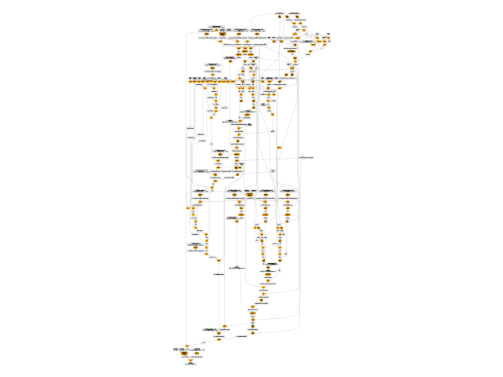

Note
Go to the end to download the full example code.
to_onnx and Phi-2¶
Exports model Phi-2.
We use a dummy model. The main difficulty is to set the dynamic shapes properly.
If there is an issue, you can go to the following line:
torch/fx/experimental/symbolic_shapes.py#L5965
and look for log.info("set_replacement %s = %s (%s) %s", a, tgt, msg, tgt_bound) and add
before or after, something like:
if isinstance(tgt, int):
raise AssertionError(
f"dynamic shape becomes a constant "
f"{[a, tgt, type(tgt), msg, tgt_bound]}"
)
Adding TORCH_LOGS="+dynamo" TORCHDYNAMO_VERBOSE=1 prints out more information
about dynamic shapes.
Model¶
import copy
from typing import Any, Dict
import onnx
import torch
import transformers
from onnx_array_api.plotting.graphviz_helper import plot_dot
from onnx_diagnostic.helpers.cache_helper import make_dynamic_cache
from experimental_experiment.helpers import string_type
from experimental_experiment.xbuilder import GraphBuilder, InferShapesOptions
from experimental_experiment.torch_interpreter import to_onnx, ExportOptions
def get_phi2_untrained(batch_size: int = 2, **kwargs) -> Dict[str, Any]:
"""
Gets a non initialized model with its inputs
:param batch_size: batch size
:param kwargs: to overwrite the configuration, example ``num_hidden_layers=1``
:return: dictionary
See `Phi-2/config.json
<https://huggingface.co/microsoft/phi-2/blob/main/config.json>`_.
"""
config = {
"_name_or_path": "microsoft/phi-2",
"architectures": ["PhiForCausalLM"],
"attention_dropout": 0.0,
"bos_token_id": 50256,
"embd_pdrop": 0.0,
"eos_token_id": 50256,
"hidden_act": "gelu_new",
"hidden_size": 2560,
"initializer_range": 0.02,
"intermediate_size": 10240,
"layer_norm_eps": 1e-05,
"max_position_embeddings": 2048,
"model_type": "phi",
"num_attention_heads": 32,
"num_hidden_layers": 32,
"num_key_value_heads": 32,
"partial_rotary_factor": 0.4,
"qk_layernorm": False,
"resid_pdrop": 0.1,
"rope_scaling": None,
"rope_theta": 10000.0,
"tie_word_embeddings": False,
"torch_dtype": "float16",
"transformers_version": "4.37.0",
"use_cache": True,
"vocab_size": 51200,
}
config.update(**kwargs)
conf = transformers.PhiConfig(**config)
model = transformers.PhiForCausalLM(conf)
model.eval()
batch = torch.export.Dim("batch", min=1, max=1024)
seq_length = torch.export.Dim("seq_length", min=1, max=4096)
shapes = {}
cache = make_dynamic_cache(
[
(torch.randn(batch_size, 32, 30, 80), torch.randn(batch_size, 32, 30, 80))
for i in range(config["num_hidden_layers"])
]
)
cache2 = make_dynamic_cache(
[
(torch.randn(batch_size + 1, 32, 31, 80), torch.randn(batch_size + 1, 32, 31, 80))
for i in range(config["num_hidden_layers"])
]
)
inputs = dict(
input_ids=torch.randint(0, 50285, (batch_size, 3)).to(torch.int64),
attention_mask=torch.ones((batch_size, 33)).to(torch.int64),
past_key_values=cache,
)
inputs2 = dict(
input_ids=torch.randint(0, 50285, (batch_size + 1, 4)).to(torch.int64),
attention_mask=torch.ones((batch_size + 1, 35)).to(torch.int64),
past_key_values=cache2,
)
n = len(cache.key_cache)
cache_length = torch.export.Dim("cache_length", min=1, max=4096)
shapes.update(
{
"input_ids": {0: batch, 1: seq_length},
"attention_mask": {
0: batch,
1: torch.export.Dim.DYNAMIC, # cache_length + seq_length
},
"past_key_values": [
[{0: batch, 2: cache_length} for _ in range(n)], # 0: batch,
[{0: batch, 2: cache_length} for _ in range(n)], # 0: batch,
],
}
)
return dict(inputs=inputs, model=model, dynamic_shapes=shapes, inputs2=inputs2)
data = get_phi2_untrained(num_hidden_layers=2)
model = data["model"]
inputs = data["inputs"]
dynamic_shapes = data["dynamic_shapes"]
print("inputs", string_type(inputs, with_shape=True))
print("dynamic_shapes", dynamic_shapes)
inputs dict(input_ids:T7s2x3,attention_mask:T7s2x33,past_key_values:DynamicCache(key_cache=#2[T1s2x32x30x80,T1s2x32x30x80], value_cache=#2[T1s2x32x30x80,T1s2x32x30x80]))
dynamic_shapes {'input_ids': {0: Dim('batch', min=1, max=1024), 1: Dim('seq_length', min=1, max=4096)}, 'attention_mask': {0: Dim('batch', min=1, max=1024), 1: _DimHint(type=<_DimHintType.DYNAMIC: 3>, min=None, max=None, _factory=True)}, 'past_key_values': [[{0: Dim('batch', min=1, max=1024), 2: Dim('cache_length', min=1, max=4096)}, {0: Dim('batch', min=1, max=1024), 2: Dim('cache_length', min=1, max=4096)}], [{0: Dim('batch', min=1, max=1024), 2: Dim('cache_length', min=1, max=4096)}, {0: Dim('batch', min=1, max=1024), 2: Dim('cache_length', min=1, max=4096)}]]}
Let’s check it is working. We need to copy the input before calling the model because it modifies the inputs and they are not properly set up when the export starts.
model(**copy.deepcopy(inputs))
CausalLMOutputWithPast(loss=None, logits=tensor([[[-0.7569, -1.1639, 0.0343, ..., 0.3633, 1.0943, -1.3043],
[-1.2233, 0.0731, 0.1871, ..., 0.0664, -0.3355, -1.0516],
[ 0.4762, 0.2255, 0.9164, ..., -0.4592, 0.0905, -1.3772]],
[[ 0.5157, 1.1595, 1.1264, ..., 0.2345, -0.0154, 0.2576],
[ 0.0053, -0.3712, -0.7050, ..., -0.2585, 0.1625, 0.3259],
[-0.5399, 0.3683, 0.5486, ..., 0.2258, -0.3614, -0.2666]]],
grad_fn=<ViewBackward0>), past_key_values=<transformers.cache_utils.DynamicCache object at 0x7fea3dc08200>, hidden_states=None, attentions=None)
Export¶
We try to export with experimental_experiment.torch_interpreter.to_onnx().
try:
to_onnx(
copy.deepcopy(model),
(),
kwargs=copy.deepcopy(inputs),
dynamic_shapes=dynamic_shapes,
)
except Exception as e:
print(f"export failed due to {e}")
The export fails for a couple of reason but it is possible to patch the
code to make it work. All those modifications are put in place by
torch_export_patches
and reverted after the export is done. Among other things, this function registers
serialization functions as shown in example
Export a model using a custom type as input.
from onnx_diagnostic.torch_export_patches import torch_export_patches
with torch_export_patches(patch_transformers=True, verbose=1) as modificator:
print("inputs before", string_type(inputs, with_shape=True))
inputs = modificator(inputs)
print("inputs after", string_type(inputs, with_shape=True))
# ep = torch.export.export(model, (), inputs, dynamic_shapes=dynamic_shapes, strict=False)
large_onx = to_onnx(
model,
(),
inputs,
dynamic_shapes=dynamic_shapes,
export_options=ExportOptions(strict=False),
large_model=True,
)
large_onx.save("plot_exporter_recipes_c_phi2.onnx", all_tensors_to_one_file=True)
[torch_export_patches] replace torch.jit.isinstance, torch._dynamo.mark_static_address
[register_cache_serialization] register <class 'transformers.cache_utils.MambaCache'>
[register_cache_serialization] register <class 'transformers.cache_utils.EncoderDecoderCache'>
[torch_export_patches] sympy.__version__='1.13.3'
[torch_export_patches] patch sympy
[torch_export_patches] torch.__version__='2.8.0.dev20250519+cu126'
[torch_export_patches] stop_if_static=0
[torch_export_patches] patch pytorch
[torch_export_patches] modifies shape constraints
[torch_export_patches] transformers.__version__='4.52.0.dev0'
[patch_module_or_classes] onnx_diagnostic.torch_export_patches.patches.patch_transformers.patched_AttentionMaskConverter:
[patch_module_or_classes] onnx_diagnostic.torch_export_patches.patches.patch_transformers.patched_DynamicCache: reorder_cache, update, crop, from_batch_splits, get_seq_length
[patch_module_or_classes] onnx_diagnostic.torch_export_patches.patches.patch_transformers.patched_GenerationMixin: _cache_dependant_input_preparation, _cache_dependant_input_preparation_exporting, prepare_inputs_for_generation
[torch_export_patches] done patching
inputs before dict(input_ids:T7s2x3,attention_mask:T7s2x33,past_key_values:DynamicCache(key_cache=#2[T1s2x32x30x80,T1s2x32x30x80], value_cache=#2[T1s2x32x30x80,T1s2x32x30x80]))
inputs after dict(input_ids:T7s2x3,attention_mask:T7s2x33,past_key_values:DynamicCache(key_cache=#2[T1s2x32x30x80,T1s2x32x30x80], value_cache=#2[T1s2x32x30x80,T1s2x32x30x80]))
[torch_export_patches] remove patches
[torch_export_patches] restored sympy functions
[torch_export_patches] restored pytorch functions
[torch_export_patches] restored shape constraints
[torch_export_patches] unpatch transformers
[unpatch_module_or_classes] onnx_diagnostic.torch_export_patches.patches.patch_transformers.patched_AttentionMaskConverter:
[unpatch_module_or_classes] onnx_diagnostic.torch_export_patches.patches.patch_transformers.patched_DynamicCache: reorder_cache, update, crop, from_batch_splits, get_seq_length
[unpatch_module_or_classes] onnx_diagnostic.torch_export_patches.patches.patch_transformers.patched_GenerationMixin: _cache_dependant_input_preparation, _cache_dependant_input_preparation_exporting, prepare_inputs_for_generation
[unregister_cache_serialization] unregistered MambaCache
[unregister_cache_serialization] unregistered EncoderDecoderCache
Exported Model¶
Let’s display the model.
onx = onnx.load("plot_exporter_recipes_c_phi2.onnx")
gr = GraphBuilder(onx, infer_shapes_options=InferShapesOptions.NONE)
print(gr.pretty_text())
dyn---: batch -> WrapSym(batch)
dyn---: cache_length -> WrapSym(cache_length)
dyn---: cache_length+seq_length -> WrapSym(cache_length+seq_length)
dyn---: channel -> WrapSym(channel)
dyn---: seq_length -> WrapSym(seq_length)
dyn---: seq_length+cache_length -> WrapSym(seq_length+cache_length)
dynrev: batch -> [('batch', SymInt(batch))]
dynrev: cache_length -> [('cache_length', SymInt(cache_length))]
dynrev: cache_length+seq_length -> [('cache_length+seq_length', SymInt(cache_length+seq_length))]
dynrev: channel -> [('channel', SymInt(channel))]
dynrev: seq_length -> [('seq_length', SymInt(seq_length))]
dynrev: seq_length+cache_length -> [('seq_length+cache_length', SymInt(seq_length+cache_length))]
dynsrc: batch -> [{batch:('input_name', 'input_ids'), batch:('axis', 0)}, {batch:('input_name', 'attention_mask'), batch:('axis', 0)}, {batch:('input_name', 'past_key_values_key_cache_0'), batch:('axis', 0)}, {batch:('input_name', 'past_key_values_key_cache_1'), batch:('axis', 0)}, {batch:('input_name', 'past_key_values_value_cache_0'), batch:('axis', 0)}, {batch:('input_name', 'past_key_values_value_cache_1'), batch:('axis', 0)}, {batch:('input_name', 'output_0'), batch:('axis', 0)}, {batch:('input_name', 'output_1'), batch:('axis', 0)}, {batch:('input_name', 'output_2'), batch:('axis', 0)}, {batch:('input_name', 'output_3'), batch:('axis', 0)}, {batch:('input_name', 'output_4'), batch:('axis', 0)}, {batch:('input_name', 'embedding'), batch:('axis', 0)}, {batch:('input_name', 'expand'), batch:('axis', 0)}, {batch:('input_name', 'slice_6'), batch:('axis', 0)}, {batch:('input_name', 'unsqueeze_4'), batch:('axis', 0)}, {batch:('input_name', '_onx_cast_to0'), batch:('axis', 0)}, {batch:('input_name', 'add_2'), batch:('axis', 0)}, {batch:('input_name', 'eq_6'), batch:('axis', 0)}, {batch:('input_name', 'masked_fill'), batch:('axis', 0)}, {batch:('input_name', 'expand_as'), batch:('axis', 0)}, {batch:('input_name', 'slice_30'), batch:('axis', 0)}, {batch:('input_name', '_onx_div_sub_dropout00'), batch:('axis', 0)}, {batch:('input_name', '_onx_matmul_layer_norm0'), batch:('axis', 0)}, {batch:('input_name', 'view'), batch:('axis', 0)}, {batch:('input_name', 'transpose_1'), batch:('axis', 0)}, {batch:('input_name', 'slice_19'), batch:('axis', 0)}, {batch:('input_name', 'slice_20'), batch:('axis', 0)}, {batch:('input_name', 'slice_23'), batch:('axis', 0)}, {batch:('input_name', 'slice_24'), batch:('axis', 0)}, {batch:('input_name', '_onx_matmul_layer_norm02'), batch:('axis', 0)}, {batch:('input_name', 'view_1'), batch:('axis', 0)}, {batch:('input_name', 'transpose_2'), batch:('axis', 0)}, {batch:('input_name', 'slice_21'), batch:('axis', 0)}, {batch:('input_name', 'slice_22'), batch:('axis', 0)}, {batch:('input_name', 'slice_25'), batch:('axis', 0)}, {batch:('input_name', 'slice_26'), batch:('axis', 0)}, {batch:('input_name', '_onx_matmul_layer_norm03'), batch:('axis', 0)}, {batch:('input_name', 'view_2'), batch:('axis', 0)}, {batch:('input_name', 'transpose_3'), batch:('axis', 0)}, {batch:('input_name', 'mul_2'), batch:('axis', 0)}, {batch:('input_name', 'neg'), batch:('axis', 0)}, {batch:('input_name', 'cat_1'), batch:('axis', 0)}, {batch:('input_name', 'mul_3'), batch:('axis', 0)}, {batch:('input_name', 'add_3'), batch:('axis', 0)}, {batch:('input_name', 'mul_4'), batch:('axis', 0)}, {batch:('input_name', 'neg_1'), batch:('axis', 0)}, {batch:('input_name', 'cat_2'), batch:('axis', 0)}, {batch:('input_name', 'mul_5'), batch:('axis', 0)}, {batch:('input_name', 'add_4'), batch:('axis', 0)}, {batch:('input_name', 'cat_3'), batch:('axis', 0)}, {batch:('input_name', 'cat_4'), batch:('axis', 0)}, {batch:('input_name', 'scaled_dot_product_attention'), batch:('axis', 0)}, {batch:('input_name', 'transpose_4'), batch:('axis', 0)}, {batch:('input_name', 'reshape_1'), batch:('axis', 0)}, {batch:('input_name', '_onx_matmul_reshape_10'), batch:('axis', 0)}, {batch:('input_name', '_onx_matmul_layer_norm04'), batch:('axis', 0)}, {batch:('input_name', '_onx_mul_linear_40'), batch:('axis', 0)}, {batch:('input_name', 'pow_1'), batch:('axis', 0)}, {batch:('input_name', '_onx_mul_pow_10'), batch:('axis', 0)}, {batch:('input_name', 'add_6'), batch:('axis', 0)}, {batch:('input_name', '_onx_mul_add_60'), batch:('axis', 0)}, {batch:('input_name', 'tanh'), batch:('axis', 0)}, {batch:('input_name', 'add_7'), batch:('axis', 0)}, {batch:('input_name', 'mul_9'), batch:('axis', 0)}, {batch:('input_name', '_onx_matmul_mul_90'), batch:('axis', 0)}, {batch:('input_name', 'add_8'), batch:('axis', 0)}, {batch:('input_name', 'add_9'), batch:('axis', 0)}, {batch:('input_name', '_onx_div_sub_add_900'), batch:('axis', 0)}, {batch:('input_name', '_onx_matmul_layer_norm_10'), batch:('axis', 0)}, {batch:('input_name', 'view_3'), batch:('axis', 0)}, {batch:('input_name', 'transpose_5'), batch:('axis', 0)}, {batch:('input_name', 'slice_31'), batch:('axis', 0)}, {batch:('input_name', 'slice_32'), batch:('axis', 0)}, {batch:('input_name', 'slice_35'), batch:('axis', 0)}, {batch:('input_name', 'slice_36'), batch:('axis', 0)}, {batch:('input_name', '_onx_matmul_layer_norm_102'), batch:('axis', 0)}, {batch:('input_name', 'view_4'), batch:('axis', 0)}, {batch:('input_name', 'transpose_6'), batch:('axis', 0)}, {batch:('input_name', 'slice_33'), batch:('axis', 0)}, {batch:('input_name', 'slice_34'), batch:('axis', 0)}, {batch:('input_name', 'slice_37'), batch:('axis', 0)}, {batch:('input_name', 'slice_38'), batch:('axis', 0)}, {batch:('input_name', '_onx_matmul_layer_norm_103'), batch:('axis', 0)}, {batch:('input_name', 'view_5'), batch:('axis', 0)}, {batch:('input_name', 'transpose_7'), batch:('axis', 0)}, {batch:('input_name', 'mul_10'), batch:('axis', 0)}, {batch:('input_name', 'neg_2'), batch:('axis', 0)}, {batch:('input_name', 'cat_7'), batch:('axis', 0)}, {batch:('input_name', 'mul_11'), batch:('axis', 0)}, {batch:('input_name', 'add_10'), batch:('axis', 0)}, {batch:('input_name', 'mul_12'), batch:('axis', 0)}, {batch:('input_name', 'neg_3'), batch:('axis', 0)}, {batch:('input_name', 'cat_8'), batch:('axis', 0)}, {batch:('input_name', 'mul_13'), batch:('axis', 0)}, {batch:('input_name', 'add_11'), batch:('axis', 0)}, {batch:('input_name', 'cat_9'), batch:('axis', 0)}, {batch:('input_name', 'cat_10'), batch:('axis', 0)}, {batch:('input_name', 'scaled_dot_product_attention_1'), batch:('axis', 0)}, {batch:('input_name', 'transpose_8'), batch:('axis', 0)}, {batch:('input_name', 'reshape_2'), batch:('axis', 0)}, {batch:('input_name', '_onx_matmul_reshape_20'), batch:('axis', 0)}, {batch:('input_name', '_onx_matmul_layer_norm_104'), batch:('axis', 0)}, {batch:('input_name', '_onx_mul_linear_100'), batch:('axis', 0)}, {batch:('input_name', 'pow_2'), batch:('axis', 0)}, {batch:('input_name', '_onx_mul_pow_20'), batch:('axis', 0)}, {batch:('input_name', 'add_12'), batch:('axis', 0)}, {batch:('input_name', '_onx_mul_add_120'), batch:('axis', 0)}, {batch:('input_name', 'tanh_1'), batch:('axis', 0)}, {batch:('input_name', 'add_13'), batch:('axis', 0)}, {batch:('input_name', 'mul_17'), batch:('axis', 0)}, {batch:('input_name', '_onx_matmul_mul_170'), batch:('axis', 0)}, {batch:('input_name', 'add_14'), batch:('axis', 0)}, {batch:('input_name', 'add_15'), batch:('axis', 0)}, {batch:('input_name', '_onx_div_sub_add_1500'), batch:('axis', 0)}, {batch:('input_name', 'add_10'), batch:('axis', 0)}, {batch:('input_name', 'transpose_7'), batch:('axis', 0)}, {batch:('input_name', 'transpose_6'), batch:('axis', 0)}, {batch:('input_name', 'view_4'), batch:('axis', 0)}, {batch:('input_name', 'cat_11'), batch:('axis', 0)}, {batch:('input_name', '_onx_add_mul_div_sub_dropout0000'), batch:('axis', 0)}, {batch:('input_name', '_onx_matmul_layer_norm_103'), batch:('axis', 0)}, {batch:('input_name', 'pow_2'), batch:('axis', 0)}, {batch:('input_name', '_onx_matmul_layer_norm04'), batch:('axis', 0)}, {batch:('input_name', 'slice_39'), batch:('axis', 0)}, {batch:('input_name', '_onx_reducemean_pow_sub_add_9000'), batch:('axis', 0)}, {batch:('input_name', 'add_14'), batch:('axis', 0)}, {batch:('input_name', 'neg_2'), batch:('axis', 0)}, {batch:('input_name', 'linear_6'), batch:('axis', 0)}, {batch:('input_name', '_onx_reducemean_pow_sub_dropout000'), batch:('axis', 0)}, {batch:('input_name', 'layer_norm_1'), batch:('axis', 0)}, {batch:('input_name', '_onx_matmul_mul_170'), batch:('axis', 0)}, {batch:('input_name', 'slice_44'), batch:('axis', 0)}, {batch:('input_name', '_onx_div_sub_add_900'), batch:('axis', 0)}, {batch:('input_name', 'linear_3'), batch:('axis', 0)}, {batch:('input_name', 'linear_11'), batch:('axis', 0)}, {batch:('input_name', 'eq_6'), batch:('axis', 0)}, {batch:('input_name', 'slice_43'), batch:('axis', 0)}, {batch:('input_name', 'neg_1'), batch:('axis', 0)}, {batch:('input_name', '_onx_reducemean_add_150'), batch:('axis', 0)}, {batch:('input_name', '_onx_cast_to0'), batch:('axis', 0)}, {batch:('input_name', '_onx_mul_div_sub_dropout000'), batch:('axis', 0)}, {batch:('input_name', 'cat_5'), batch:('axis', 0)}, {batch:('input_name', 'view_1'), batch:('axis', 0)}, {batch:('input_name', 'slice_34'), batch:('axis', 0)}, {batch:('input_name', '_onx_matmul_reshape_10'), batch:('axis', 0)}, {batch:('input_name', 'unsqueeze_3'), batch:('axis', 0)}, {batch:('input_name', '_onx_sqrt_add_reducemean_pow_sub_add_900000'), batch:('axis', 0)}, {batch:('input_name', 'slice_6'), batch:('axis', 0)}, {batch:('input_name', 'linear'), batch:('axis', 0)}, {batch:('input_name', '_onx_sub_add_150'), batch:('axis', 0)}, {batch:('input_name', '_onx_add_mul_div_sub_add_90000'), batch:('axis', 0)}, {batch:('input_name', 'expand'), batch:('axis', 0)}, {batch:('input_name', 'mul_14'), batch:('axis', 0)}, {batch:('input_name', 'linear_12'), batch:('axis', 0)}, {batch:('input_name', '_onx_reducemean_pow_sub_add_15000'), batch:('axis', 0)}, {batch:('input_name', 'linear_5'), batch:('axis', 0)}, {batch:('input_name', 'tanh'), batch:('axis', 0)}, {batch:('input_name', 'slice_36'), batch:('axis', 0)}, {batch:('input_name', 'slice_31'), batch:('axis', 0)}, {batch:('input_name', 'dropout_2'), batch:('axis', 0)}, {batch:('input_name', 'slice_5'), batch:('axis', 0)}, {batch:('input_name', 'dropout_1'), batch:('axis', 0)}, {batch:('input_name', '_onx_mul_pow_20'), batch:('axis', 0)}, {batch:('input_name', '_onx_reducemean_add_90'), batch:('axis', 0)}, {batch:('input_name', 'cat_4'), batch:('axis', 0)}, {batch:('input_name', 'add_4'), batch:('axis', 0)}, {batch:('input_name', 'contiguous_1'), batch:('axis', 0)}, {batch:('input_name', 'unsqueeze_4'), batch:('axis', 0)}, {batch:('input_name', 'mul_10'), batch:('axis', 0)}, {batch:('input_name', 'cat_3'), batch:('axis', 0)}, {batch:('input_name', '_onx_add_reducemean_pow_sub_add_90000'), batch:('axis', 0)}, {batch:('input_name', 'clone'), batch:('axis', 0)}, {batch:('input_name', '_onx_matmul_layer_norm02'), batch:('axis', 0)}, {batch:('input_name', 'mul_4'), batch:('axis', 0)}, {batch:('input_name', 'slice_33'), batch:('axis', 0)}, {batch:('input_name', 'slice_20'), batch:('axis', 0)}, {batch:('input_name', 'cat_1'), batch:('axis', 0)}, {batch:('input_name', 'add_13'), batch:('axis', 0)}, {batch:('input_name', 'layer_norm_2'), batch:('axis', 0)}, {batch:('input_name', 'view_3'), batch:('axis', 0)}, {batch:('input_name', 'slice_23'), batch:('axis', 0)}, {batch:('input_name', '_onx_sqrt_add_reducemean_pow_sub_dropout00000'), batch:('axis', 0)}, {batch:('input_name', 'slice_28'), batch:('axis', 0)}, {batch:('input_name', '_onx_matmul_layer_norm03'), batch:('axis', 0)}, {batch:('input_name', 'linear_7'), batch:('axis', 0)}, {batch:('input_name', 'add_2'), batch:('axis', 0)}, {batch:('input_name', 'add_6'), batch:('axis', 0)}, {batch:('input_name', 'slice_38'), batch:('axis', 0)}, {batch:('input_name', 'linear_4'), batch:('axis', 0)}, {batch:('input_name', 'transpose_8'), batch:('axis', 0)}, {batch:('input_name', 'masked_fill'), batch:('axis', 0)}, {batch:('input_name', '_onx_pow_sub_dropout00'), batch:('axis', 0)}, {batch:('input_name', 'mul_11'), batch:('axis', 0)}, {batch:('input_name', 'dropout_3'), batch:('axis', 0)}, {batch:('input_name', 'cat_9'), batch:('axis', 0)}, {batch:('input_name', '_onx_sub_add_90'), batch:('axis', 0)}, {batch:('input_name', '_onx_matmul_layer_norm_104'), batch:('axis', 0)}, {batch:('input_name', 'add_15'), batch:('axis', 0)}, {batch:('input_name', 'add_8'), batch:('axis', 0)}, {batch:('input_name', '_onx_mul_add_120'), batch:('axis', 0)}, {batch:('input_name', '_onx_mul_div_sub_add_9000'), batch:('axis', 0)}, {batch:('input_name', 'view_5'), batch:('axis', 0)}, {batch:('input_name', 'mul_13'), batch:('axis', 0)}, {batch:('input_name', '_onx_pow_sub_add_900'), batch:('axis', 0)}, {batch:('input_name', 'scaled_dot_product_attention'), batch:('axis', 0)}, {batch:('input_name', '_onx_reducemean_dropout0'), batch:('axis', 0)}, {batch:('input_name', '_onx_mul_pow_10'), batch:('axis', 0)}, {batch:('input_name', 'mul_9'), batch:('axis', 0)}, {batch:('input_name', 'slice_9'), batch:('axis', 0)}, {batch:('input_name', 'slice_19'), batch:('axis', 0)}, {batch:('input_name', 'slice_40'), batch:('axis', 0)}, {batch:('input_name', 'mul_2'), batch:('axis', 0)}, {batch:('input_name', 'neg_3'), batch:('axis', 0)}, {batch:('input_name', 'slice_45'), batch:('axis', 0)}, {batch:('input_name', 'dropout'), batch:('axis', 0)}, {batch:('input_name', 'transpose_2'), batch:('axis', 0)}, {batch:('input_name', 'neg'), batch:('axis', 0)}, {batch:('input_name', 'slice_3'), batch:('axis', 0)}, {batch:('input_name', 'layer_norm'), batch:('axis', 0)}, {batch:('input_name', 'view'), batch:('axis', 0)}, {batch:('input_name', '_onx_mul_linear_40'), batch:('axis', 0)}, {batch:('input_name', 'mul_17'), batch:('axis', 0)}, {batch:('input_name', 'slice_21'), batch:('axis', 0)}, {batch:('input_name', '_onx_matmul_layer_norm_102'), batch:('axis', 0)}, {batch:('input_name', 'slice_29'), batch:('axis', 0)}, {batch:('input_name', 'add_11'), batch:('axis', 0)}, {batch:('input_name', '_onx_add_mul_div_sub_add_150000'), batch:('axis', 0)}, {batch:('input_name', 'scaled_dot_product_attention_1'), batch:('axis', 0)}, {batch:('input_name', 'transpose_5'), batch:('axis', 0)}, {batch:('input_name', 'cat_6'), batch:('axis', 0)}, {batch:('input_name', '_onx_matmul_mul_90'), batch:('axis', 0)}, {batch:('input_name', 'slice_27'), batch:('axis', 0)}, {batch:('input_name', '_onx_add_reducemean_pow_sub_add_150000'), batch:('axis', 0)}, {batch:('input_name', 'mul_12'), batch:('axis', 0)}, {batch:('input_name', 'mul_3'), batch:('axis', 0)}, {batch:('input_name', 'mul_15'), batch:('axis', 0)}, {batch:('input_name', 'view_2'), batch:('axis', 0)}, {batch:('input_name', 'linear_8'), batch:('axis', 0)}, {batch:('input_name', 'cat_10'), batch:('axis', 0)}, {batch:('input_name', '_onx_mul_div_sub_add_15000'), batch:('axis', 0)}, {batch:('input_name', 'linear_2'), batch:('axis', 0)}, {batch:('input_name', '_onx_matmul_slice_450'), batch:('axis', 0)}, {batch:('input_name', 'add_12'), batch:('axis', 0)}, {batch:('input_name', 'cat_7'), batch:('axis', 0)}, {batch:('input_name', 'slice_22'), batch:('axis', 0)}, {batch:('input_name', 'contiguous'), batch:('axis', 0)}, {batch:('input_name', '_onx_pow_sub_add_1500'), batch:('axis', 0)}, {batch:('input_name', 'slice_37'), batch:('axis', 0)}, {batch:('input_name', '_onx_sqrt_add_reducemean_pow_sub_add_1500000'), batch:('axis', 0)}, {batch:('input_name', 'mul_5'), batch:('axis', 0)}, {batch:('input_name', 'slice_10'), batch:('axis', 0)}, {batch:('input_name', 'linear_1'), batch:('axis', 0)}, {batch:('input_name', 'slice_26'), batch:('axis', 0)}, {batch:('input_name', 'slice_35'), batch:('axis', 0)}, {batch:('input_name', 'transpose_3'), batch:('axis', 0)}, {batch:('input_name', 'add_9'), batch:('axis', 0)}, {batch:('input_name', 'mul_6'), batch:('axis', 0)}, {batch:('input_name', 'slice_11'), batch:('axis', 0)}, {batch:('input_name', 'cat_2'), batch:('axis', 0)}, {batch:('input_name', 'pow_1'), batch:('axis', 0)}, {batch:('input_name', 'embedding'), batch:('axis', 0)}, {batch:('input_name', '_onx_add_reducemean_pow_sub_dropout0000'), batch:('axis', 0)}, {batch:('input_name', 'slice_4'), batch:('axis', 0)}, {batch:('input_name', 'linear_10'), batch:('axis', 0)}, {batch:('input_name', 'slice_41'), batch:('axis', 0)}, {batch:('input_name', '_onx_mul_linear_100'), batch:('axis', 0)}, {batch:('input_name', '_onx_mul_add_60'), batch:('axis', 0)}, {batch:('input_name', 'transpose_4'), batch:('axis', 0)}, {batch:('input_name', 'expand_as'), batch:('axis', 0)}, {batch:('input_name', 'to'), batch:('axis', 0)}, {batch:('input_name', 'slice_24'), batch:('axis', 0)}, {batch:('input_name', 'slice_42'), batch:('axis', 0)}, {batch:('input_name', 'mul_8'), batch:('axis', 0)}, {batch:('input_name', 'cat_12'), batch:('axis', 0)}, {batch:('input_name', 'reshape_1'), batch:('axis', 0)}, {batch:('input_name', 'transpose_1'), batch:('axis', 0)}, {batch:('input_name', 'tanh_1'), batch:('axis', 0)}, {batch:('input_name', 'slice_12'), batch:('axis', 0)}, {batch:('input_name', '_onx_matmul_reshape_20'), batch:('axis', 0)}, {batch:('input_name', '_onx_matmul_layer_norm0'), batch:('axis', 0)}, {batch:('input_name', '_onx_div_sub_add_1500'), batch:('axis', 0)}, {batch:('input_name', 'add_3'), batch:('axis', 0)}, {batch:('input_name', 'linear_9'), batch:('axis', 0)}, {batch:('input_name', 'dropout_4'), batch:('axis', 0)}, {batch:('input_name', 'slice_32'), batch:('axis', 0)}, {batch:('input_name', 'mul_7'), batch:('axis', 0)}, {batch:('input_name', 'slice_30'), batch:('axis', 0)}, {batch:('input_name', 'add_7'), batch:('axis', 0)}, {batch:('input_name', '_onx_sub_dropout0'), batch:('axis', 0)}, {batch:('input_name', 'reshape_2'), batch:('axis', 0)}, {batch:('input_name', '_onx_matmul_layer_norm_10'), batch:('axis', 0)}, {batch:('input_name', 'mul_16'), batch:('axis', 0)}, {batch:('input_name', '_onx_div_sub_dropout00'), batch:('axis', 0)}, {batch:('input_name', 'slice_25'), batch:('axis', 0)}, {batch:('input_name', 'cat_8'), batch:('axis', 0)}]
dynsrc: cache_length -> [{cache_length:('input_name', 'past_key_values_key_cache_0'), cache_length:('axis', 2)}, {cache_length:('input_name', 'past_key_values_key_cache_1'), cache_length:('axis', 2)}, {cache_length:('input_name', 'past_key_values_value_cache_0'), cache_length:('axis', 2)}, {cache_length:('input_name', 'past_key_values_value_cache_1'), cache_length:('axis', 2)}]
dynsrc: cache_length+seq_length -> [{cache_length+seq_length:('input_name', 'output_1'), cache_length+seq_length:('axis', 2)}, {cache_length+seq_length:('input_name', 'output_2'), cache_length+seq_length:('axis', 2)}, {cache_length+seq_length:('input_name', 'output_3'), cache_length+seq_length:('axis', 2)}, {cache_length+seq_length:('input_name', 'output_4'), cache_length+seq_length:('axis', 2)}, {cache_length+seq_length:('input_name', 'cat_11'), cache_length+seq_length:('axis', 2)}, {cache_length+seq_length:('input_name', 'cat_5'), cache_length+seq_length:('axis', 2)}, {cache_length+seq_length:('input_name', 'cat_6'), cache_length+seq_length:('axis', 2)}, {cache_length+seq_length:('input_name', 'cat_12'), cache_length+seq_length:('axis', 2)}]
dynsrc: channel -> [{channel:('input_name', 'attention_mask'), channel:('axis', 1)}, {channel:('input_name', 'full'), channel:('axis', 1)}, {channel:('input_name', 'triu'), channel:('axis', 1)}, {channel:('input_name', 'arange_1'), channel:('axis', 0)}, {channel:('input_name', 'gt'), channel:('axis', 1)}, {channel:('input_name', '_onx_cast_gt0'), channel:('axis', 1)}, {channel:('input_name', '_onx_mul_triu0'), channel:('axis', 1)}, {channel:('input_name', 'unsqueeze_2'), channel:('axis', 3)}, {channel:('input_name', 'expand'), channel:('axis', 3)}, {channel:('input_name', 'slice_6'), channel:('axis', 3)}, {channel:('input_name', 'unsqueeze_4'), channel:('axis', 3)}, {channel:('input_name', '_onx_cast_to0'), channel:('axis', 3)}, {channel:('input_name', 'add_2'), channel:('axis', 3)}, {channel:('input_name', 'eq_6'), channel:('axis', 3)}, {channel:('input_name', 'masked_fill'), channel:('axis', 3)}, {channel:('input_name', 'expand_as'), channel:('axis', 3)}, {channel:('input_name', 'slice_39'), channel:('axis', 3)}, {channel:('input_name', 'eq_6'), channel:('axis', 3)}, {channel:('input_name', '_onx_cast_to0'), channel:('axis', 3)}, {channel:('input_name', 'unsqueeze_3'), channel:('axis', 2)}, {channel:('input_name', 'triu'), channel:('axis', 1)}, {channel:('input_name', 'slice_6'), channel:('axis', 3)}, {channel:('input_name', 'expand'), channel:('axis', 3)}, {channel:('input_name', 'slice_5'), channel:('axis', 3)}, {channel:('input_name', 'mul_'), channel:('axis', 1)}, {channel:('input_name', 'arange_1'), channel:('axis', 0)}, {channel:('input_name', 'unsqueeze_4'), channel:('axis', 3)}, {channel:('input_name', 'unsqueeze_1'), channel:('axis', 2)}, {channel:('input_name', 'clone'), channel:('axis', 3)}, {channel:('input_name', 'full'), channel:('axis', 1)}, {channel:('input_name', 'slice_28'), channel:('axis', 3)}, {channel:('input_name', 'add_2'), channel:('axis', 3)}, {channel:('input_name', 'masked_fill'), channel:('axis', 3)}, {channel:('input_name', '_onx_mul_triu0'), channel:('axis', 1)}, {channel:('input_name', 'slice_9'), channel:('axis', 3)}, {channel:('input_name', 'slice_40'), channel:('axis', 3)}, {channel:('input_name', 'slice_3'), channel:('axis', 3)}, {channel:('input_name', 'gt'), channel:('axis', 1)}, {channel:('input_name', 'slice_29'), channel:('axis', 3)}, {channel:('input_name', '_onx_cast_gt0'), channel:('axis', 1)}, {channel:('input_name', 'slice_27'), channel:('axis', 3)}, {channel:('input_name', 'slice_10'), channel:('axis', 3)}, {channel:('input_name', 'slice_11'), channel:('axis', 3)}, {channel:('input_name', 'slice_4'), channel:('axis', 3)}, {channel:('input_name', 'slice_41'), channel:('axis', 3)}, {channel:('input_name', 'expand_as'), channel:('axis', 3)}, {channel:('input_name', 'to'), channel:('axis', 3)}, {channel:('input_name', 'unsqueeze_2'), channel:('axis', 3)}, {channel:('input_name', 'slice_12'), channel:('axis', 3)}]
dynsrc: seq_length -> [{seq_length:('input_name', 'input_ids'), seq_length:('axis', 1)}, {seq_length:('input_name', 'output_0'), seq_length:('axis', 1)}, {seq_length:('input_name', 'embedding'), seq_length:('axis', 1)}, {seq_length:('input_name', 'arange'), seq_length:('axis', 0)}, {seq_length:('input_name', 'unsqueeze_7'), seq_length:('axis', 2)}, {seq_length:('input_name', 'full'), seq_length:('axis', 0)}, {seq_length:('input_name', 'triu'), seq_length:('axis', 0)}, {seq_length:('input_name', 'reshape'), seq_length:('axis', 0)}, {seq_length:('input_name', 'gt'), seq_length:('axis', 0)}, {seq_length:('input_name', '_onx_cast_gt0'), seq_length:('axis', 0)}, {seq_length:('input_name', '_onx_mul_triu0'), seq_length:('axis', 0)}, {seq_length:('input_name', 'unsqueeze_2'), seq_length:('axis', 2)}, {seq_length:('input_name', 'expand'), seq_length:('axis', 2)}, {seq_length:('input_name', 'slice_6'), seq_length:('axis', 2)}, {seq_length:('input_name', 'add_2'), seq_length:('axis', 2)}, {seq_length:('input_name', 'eq_6'), seq_length:('axis', 2)}, {seq_length:('input_name', 'masked_fill'), seq_length:('axis', 2)}, {seq_length:('input_name', 'expand_as'), seq_length:('axis', 2)}, {seq_length:('input_name', 'slice_30'), seq_length:('axis', 2)}, {seq_length:('input_name', 'to_3'), seq_length:('axis', 2)}, {seq_length:('input_name', 'matmul'), seq_length:('axis', 2)}, {seq_length:('input_name', 'transpose'), seq_length:('axis', 1)}, {seq_length:('input_name', 'cat'), seq_length:('axis', 1)}, {seq_length:('input_name', 'wrap_with_set_grad_enabled#0'), seq_length:('axis', 1)}, {seq_length:('input_name', 'unsqueeze_8'), seq_length:('axis', 2)}, {seq_length:('input_name', 'wrap_with_set_grad_enabled#1'), seq_length:('axis', 1)}, {seq_length:('input_name', 'unsqueeze_9'), seq_length:('axis', 2)}, {seq_length:('input_name', '_onx_div_sub_dropout00'), seq_length:('axis', 1)}, {seq_length:('input_name', '_onx_matmul_layer_norm0'), seq_length:('axis', 1)}, {seq_length:('input_name', 'view'), seq_length:('axis', 1)}, {seq_length:('input_name', 'transpose_1'), seq_length:('axis', 2)}, {seq_length:('input_name', 'slice_19'), seq_length:('axis', 2)}, {seq_length:('input_name', 'slice_20'), seq_length:('axis', 2)}, {seq_length:('input_name', 'slice_23'), seq_length:('axis', 2)}, {seq_length:('input_name', 'slice_24'), seq_length:('axis', 2)}, {seq_length:('input_name', '_onx_matmul_layer_norm02'), seq_length:('axis', 1)}, {seq_length:('input_name', 'view_1'), seq_length:('axis', 1)}, {seq_length:('input_name', 'transpose_2'), seq_length:('axis', 2)}, {seq_length:('input_name', 'slice_21'), seq_length:('axis', 2)}, {seq_length:('input_name', 'slice_22'), seq_length:('axis', 2)}, {seq_length:('input_name', 'slice_25'), seq_length:('axis', 2)}, {seq_length:('input_name', 'slice_26'), seq_length:('axis', 2)}, {seq_length:('input_name', '_onx_matmul_layer_norm03'), seq_length:('axis', 1)}, {seq_length:('input_name', 'view_2'), seq_length:('axis', 1)}, {seq_length:('input_name', 'transpose_3'), seq_length:('axis', 2)}, {seq_length:('input_name', 'mul_2'), seq_length:('axis', 2)}, {seq_length:('input_name', 'neg'), seq_length:('axis', 2)}, {seq_length:('input_name', 'cat_1'), seq_length:('axis', 2)}, {seq_length:('input_name', 'mul_3'), seq_length:('axis', 2)}, {seq_length:('input_name', 'add_3'), seq_length:('axis', 2)}, {seq_length:('input_name', 'mul_4'), seq_length:('axis', 2)}, {seq_length:('input_name', 'neg_1'), seq_length:('axis', 2)}, {seq_length:('input_name', 'cat_2'), seq_length:('axis', 2)}, {seq_length:('input_name', 'mul_5'), seq_length:('axis', 2)}, {seq_length:('input_name', 'add_4'), seq_length:('axis', 2)}, {seq_length:('input_name', 'cat_3'), seq_length:('axis', 2)}, {seq_length:('input_name', 'cat_4'), seq_length:('axis', 2)}, {seq_length:('input_name', 'scaled_dot_product_attention'), seq_length:('axis', 2)}, {seq_length:('input_name', 'transpose_4'), seq_length:('axis', 1)}, {seq_length:('input_name', 'reshape_1'), seq_length:('axis', 1)}, {seq_length:('input_name', '_onx_matmul_reshape_10'), seq_length:('axis', 1)}, {seq_length:('input_name', '_onx_matmul_layer_norm04'), seq_length:('axis', 1)}, {seq_length:('input_name', '_onx_mul_linear_40'), seq_length:('axis', 1)}, {seq_length:('input_name', 'pow_1'), seq_length:('axis', 1)}, {seq_length:('input_name', '_onx_mul_pow_10'), seq_length:('axis', 1)}, {seq_length:('input_name', 'add_6'), seq_length:('axis', 1)}, {seq_length:('input_name', '_onx_mul_add_60'), seq_length:('axis', 1)}, {seq_length:('input_name', 'tanh'), seq_length:('axis', 1)}, {seq_length:('input_name', 'add_7'), seq_length:('axis', 1)}, {seq_length:('input_name', 'mul_9'), seq_length:('axis', 1)}, {seq_length:('input_name', '_onx_matmul_mul_90'), seq_length:('axis', 1)}, {seq_length:('input_name', 'add_8'), seq_length:('axis', 1)}, {seq_length:('input_name', 'add_9'), seq_length:('axis', 1)}, {seq_length:('input_name', '_onx_div_sub_add_900'), seq_length:('axis', 1)}, {seq_length:('input_name', '_onx_matmul_layer_norm_10'), seq_length:('axis', 1)}, {seq_length:('input_name', 'view_3'), seq_length:('axis', 1)}, {seq_length:('input_name', 'transpose_5'), seq_length:('axis', 2)}, {seq_length:('input_name', 'slice_31'), seq_length:('axis', 2)}, {seq_length:('input_name', 'slice_32'), seq_length:('axis', 2)}, {seq_length:('input_name', 'slice_35'), seq_length:('axis', 2)}, {seq_length:('input_name', 'slice_36'), seq_length:('axis', 2)}, {seq_length:('input_name', '_onx_matmul_layer_norm_102'), seq_length:('axis', 1)}, {seq_length:('input_name', 'view_4'), seq_length:('axis', 1)}, {seq_length:('input_name', 'transpose_6'), seq_length:('axis', 2)}, {seq_length:('input_name', 'slice_33'), seq_length:('axis', 2)}, {seq_length:('input_name', 'slice_34'), seq_length:('axis', 2)}, {seq_length:('input_name', 'slice_37'), seq_length:('axis', 2)}, {seq_length:('input_name', 'slice_38'), seq_length:('axis', 2)}, {seq_length:('input_name', '_onx_matmul_layer_norm_103'), seq_length:('axis', 1)}, {seq_length:('input_name', 'view_5'), seq_length:('axis', 1)}, {seq_length:('input_name', 'transpose_7'), seq_length:('axis', 2)}, {seq_length:('input_name', 'mul_10'), seq_length:('axis', 2)}, {seq_length:('input_name', 'neg_2'), seq_length:('axis', 2)}, {seq_length:('input_name', 'cat_7'), seq_length:('axis', 2)}, {seq_length:('input_name', 'mul_11'), seq_length:('axis', 2)}, {seq_length:('input_name', 'add_10'), seq_length:('axis', 2)}, {seq_length:('input_name', 'mul_12'), seq_length:('axis', 2)}, {seq_length:('input_name', 'neg_3'), seq_length:('axis', 2)}, {seq_length:('input_name', 'cat_8'), seq_length:('axis', 2)}, {seq_length:('input_name', 'mul_13'), seq_length:('axis', 2)}, {seq_length:('input_name', 'add_11'), seq_length:('axis', 2)}, {seq_length:('input_name', 'cat_9'), seq_length:('axis', 2)}, {seq_length:('input_name', 'cat_10'), seq_length:('axis', 2)}, {seq_length:('input_name', 'scaled_dot_product_attention_1'), seq_length:('axis', 2)}, {seq_length:('input_name', 'transpose_8'), seq_length:('axis', 1)}, {seq_length:('input_name', 'reshape_2'), seq_length:('axis', 1)}, {seq_length:('input_name', '_onx_matmul_reshape_20'), seq_length:('axis', 1)}, {seq_length:('input_name', '_onx_matmul_layer_norm_104'), seq_length:('axis', 1)}, {seq_length:('input_name', '_onx_mul_linear_100'), seq_length:('axis', 1)}, {seq_length:('input_name', 'pow_2'), seq_length:('axis', 1)}, {seq_length:('input_name', '_onx_mul_pow_20'), seq_length:('axis', 1)}, {seq_length:('input_name', 'add_12'), seq_length:('axis', 1)}, {seq_length:('input_name', '_onx_mul_add_120'), seq_length:('axis', 1)}, {seq_length:('input_name', 'tanh_1'), seq_length:('axis', 1)}, {seq_length:('input_name', 'add_13'), seq_length:('axis', 1)}, {seq_length:('input_name', 'mul_17'), seq_length:('axis', 1)}, {seq_length:('input_name', '_onx_matmul_mul_170'), seq_length:('axis', 1)}, {seq_length:('input_name', 'add_14'), seq_length:('axis', 1)}, {seq_length:('input_name', 'add_15'), seq_length:('axis', 1)}, {seq_length:('input_name', '_onx_div_sub_add_1500'), seq_length:('axis', 1)}, {seq_length:('input_name', 'arange'), seq_length:('axis', 0)}, {seq_length:('input_name', 'add_10'), seq_length:('axis', 2)}, {seq_length:('input_name', 'transpose_7'), seq_length:('axis', 2)}, {seq_length:('input_name', 'transpose_6'), seq_length:('axis', 2)}, {seq_length:('input_name', 'view_4'), seq_length:('axis', 1)}, {seq_length:('input_name', '_onx_add_mul_div_sub_dropout0000'), seq_length:('axis', 1)}, {seq_length:('input_name', '_onx_matmul_layer_norm_103'), seq_length:('axis', 1)}, {seq_length:('input_name', 'pow_2'), seq_length:('axis', 1)}, {seq_length:('input_name', '_onx_matmul_layer_norm04'), seq_length:('axis', 1)}, {seq_length:('input_name', 'slice_39'), seq_length:('axis', 2)}, {seq_length:('input_name', '_onx_reducemean_pow_sub_add_9000'), seq_length:('axis', 1)}, {seq_length:('input_name', 'to_3'), seq_length:('axis', 2)}, {seq_length:('input_name', 'add_14'), seq_length:('axis', 1)}, {seq_length:('input_name', 'neg_2'), seq_length:('axis', 2)}, {seq_length:('input_name', 'linear_6'), seq_length:('axis', 1)}, {seq_length:('input_name', '_onx_reducemean_pow_sub_dropout000'), seq_length:('axis', 1)}, {seq_length:('input_name', 'layer_norm_1'), seq_length:('axis', 1)}, {seq_length:('input_name', '_onx_matmul_mul_170'), seq_length:('axis', 1)}, {seq_length:('input_name', 'slice_44'), seq_length:('axis', 1)}, {seq_length:('input_name', '_onx_div_sub_add_900'), seq_length:('axis', 1)}, {seq_length:('input_name', 'linear_3'), seq_length:('axis', 1)}, {seq_length:('input_name', 'linear_11'), seq_length:('axis', 1)}, {seq_length:('input_name', 'eq_6'), seq_length:('axis', 2)}, {seq_length:('input_name', 'slice_43'), seq_length:('axis', 1)}, {seq_length:('input_name', 'unsqueeze_10'), seq_length:('axis', 2)}, {seq_length:('input_name', 'neg_1'), seq_length:('axis', 2)}, {seq_length:('input_name', '_onx_reducemean_add_150'), seq_length:('axis', 1)}, {seq_length:('input_name', 'transpose'), seq_length:('axis', 1)}, {seq_length:('input_name', '_onx_mul_div_sub_dropout000'), seq_length:('axis', 1)}, {seq_length:('input_name', 'view_1'), seq_length:('axis', 1)}, {seq_length:('input_name', 'slice_34'), seq_length:('axis', 2)}, {seq_length:('input_name', '_onx_matmul_reshape_10'), seq_length:('axis', 1)}, {seq_length:('input_name', 'triu'), seq_length:('axis', 0)}, {seq_length:('input_name', '_onx_sqrt_add_reducemean_pow_sub_add_900000'), seq_length:('axis', 1)}, {seq_length:('input_name', 'slice_6'), seq_length:('axis', 2)}, {seq_length:('input_name', 'linear'), seq_length:('axis', 1)}, {seq_length:('input_name', '_onx_sub_add_150'), seq_length:('axis', 1)}, {seq_length:('input_name', '_onx_add_mul_div_sub_add_90000'), seq_length:('axis', 1)}, {seq_length:('input_name', 'expand'), seq_length:('axis', 2)}, {seq_length:('input_name', 'mul_14'), seq_length:('axis', 1)}, {seq_length:('input_name', 'linear_12'), seq_length:('axis', 1)}, {seq_length:('input_name', '_onx_reducemean_pow_sub_add_15000'), seq_length:('axis', 1)}, {seq_length:('input_name', 'linear_5'), seq_length:('axis', 1)}, {seq_length:('input_name', 'tanh'), seq_length:('axis', 1)}, {seq_length:('input_name', 'slice_36'), seq_length:('axis', 2)}, {seq_length:('input_name', 'slice_31'), seq_length:('axis', 2)}, {seq_length:('input_name', 'dropout_2'), seq_length:('axis', 1)}, {seq_length:('input_name', 'slice_5'), seq_length:('axis', 2)}, {seq_length:('input_name', 'dropout_1'), seq_length:('axis', 1)}, {seq_length:('input_name', '_onx_mul_pow_20'), seq_length:('axis', 1)}, {seq_length:('input_name', 'mul_'), seq_length:('axis', 0)}, {seq_length:('input_name', '_onx_reducemean_add_90'), seq_length:('axis', 1)}, {seq_length:('input_name', 'cat_4'), seq_length:('axis', 2)}, {seq_length:('input_name', 'add_4'), seq_length:('axis', 2)}, {seq_length:('input_name', 'contiguous_1'), seq_length:('axis', 1)}, {seq_length:('input_name', 'unsqueeze_11'), seq_length:('axis', 2)}, {seq_length:('input_name', 'mul_10'), seq_length:('axis', 2)}, {seq_length:('input_name', 'cat_3'), seq_length:('axis', 2)}, {seq_length:('input_name', 'unsqueeze_1'), seq_length:('axis', 1)}, {seq_length:('input_name', '_onx_add_reducemean_pow_sub_add_90000'), seq_length:('axis', 1)}, {seq_length:('input_name', 'clone'), seq_length:('axis', 2)}, {seq_length:('input_name', '_onx_matmul_layer_norm02'), seq_length:('axis', 1)}, {seq_length:('input_name', 'full'), seq_length:('axis', 0)}, {seq_length:('input_name', 'mul_4'), seq_length:('axis', 2)}, {seq_length:('input_name', 'slice_33'), seq_length:('axis', 2)}, {seq_length:('input_name', 'slice_20'), seq_length:('axis', 2)}, {seq_length:('input_name', 'cat_1'), seq_length:('axis', 2)}, {seq_length:('input_name', 'add_13'), seq_length:('axis', 1)}, {seq_length:('input_name', 'layer_norm_2'), seq_length:('axis', 1)}, {seq_length:('input_name', 'view_3'), seq_length:('axis', 1)}, {seq_length:('input_name', 'slice_23'), seq_length:('axis', 2)}, {seq_length:('input_name', '_onx_sqrt_add_reducemean_pow_sub_dropout00000'), seq_length:('axis', 1)}, {seq_length:('input_name', 'slice_28'), seq_length:('axis', 2)}, {seq_length:('input_name', '_onx_matmul_layer_norm03'), seq_length:('axis', 1)}, {seq_length:('input_name', 'linear_7'), seq_length:('axis', 1)}, {seq_length:('input_name', 'add_2'), seq_length:('axis', 2)}, {seq_length:('input_name', 'add_6'), seq_length:('axis', 1)}, {seq_length:('input_name', 'slice_38'), seq_length:('axis', 2)}, {seq_length:('input_name', 'linear_4'), seq_length:('axis', 1)}, {seq_length:('input_name', 'transpose_8'), seq_length:('axis', 1)}, {seq_length:('input_name', 'masked_fill'), seq_length:('axis', 2)}, {seq_length:('input_name', '_onx_pow_sub_dropout00'), seq_length:('axis', 1)}, {seq_length:('input_name', 'mul_11'), seq_length:('axis', 2)}, {seq_length:('input_name', 'dropout_3'), seq_length:('axis', 1)}, {seq_length:('input_name', 'wrap_with_set_grad_enabled#1'), seq_length:('axis', 1)}, {seq_length:('input_name', '_onx_mul_triu0'), seq_length:('axis', 0)}, {seq_length:('input_name', 'cat_9'), seq_length:('axis', 2)}, {seq_length:('input_name', '_onx_sub_add_90'), seq_length:('axis', 1)}, {seq_length:('input_name', '_onx_matmul_layer_norm_104'), seq_length:('axis', 1)}, {seq_length:('input_name', 'add_15'), seq_length:('axis', 1)}, {seq_length:('input_name', 'add_8'), seq_length:('axis', 1)}, {seq_length:('input_name', '_onx_mul_add_120'), seq_length:('axis', 1)}, {seq_length:('input_name', '_onx_mul_div_sub_add_9000'), seq_length:('axis', 1)}, {seq_length:('input_name', 'view_5'), seq_length:('axis', 1)}, {seq_length:('input_name', 'mul_13'), seq_length:('axis', 2)}, {seq_length:('input_name', '_onx_pow_sub_add_900'), seq_length:('axis', 1)}, {seq_length:('input_name', 'unsqueeze_8'), seq_length:('axis', 2)}, {seq_length:('input_name', 'scaled_dot_product_attention'), seq_length:('axis', 2)}, {seq_length:('input_name', '_onx_reducemean_dropout0'), seq_length:('axis', 1)}, {seq_length:('input_name', '_onx_mul_pow_10'), seq_length:('axis', 1)}, {seq_length:('input_name', 'mul_9'), seq_length:('axis', 1)}, {seq_length:('input_name', 'slice_9'), seq_length:('axis', 2)}, {seq_length:('input_name', 'slice_19'), seq_length:('axis', 2)}, {seq_length:('input_name', 'slice_40'), seq_length:('axis', 2)}, {seq_length:('input_name', 'mul_2'), seq_length:('axis', 2)}, {seq_length:('input_name', 'neg_3'), seq_length:('axis', 2)}, {seq_length:('input_name', 'slice_45'), seq_length:('axis', 1)}, {seq_length:('input_name', 'dropout'), seq_length:('axis', 1)}, {seq_length:('input_name', 'to_6'), seq_length:('axis', 1)}, {seq_length:('input_name', 'transpose_2'), seq_length:('axis', 2)}, {seq_length:('input_name', 'neg'), seq_length:('axis', 2)}, {seq_length:('input_name', 'slice_3'), seq_length:('axis', 2)}, {seq_length:('input_name', 'layer_norm'), seq_length:('axis', 1)}, {seq_length:('input_name', 'view'), seq_length:('axis', 1)}, {seq_length:('input_name', '_onx_mul_linear_40'), seq_length:('axis', 1)}, {seq_length:('input_name', 'mul_17'), seq_length:('axis', 1)}, {seq_length:('input_name', 'matmul'), seq_length:('axis', 2)}, {seq_length:('input_name', 'slice_21'), seq_length:('axis', 2)}, {seq_length:('input_name', '_onx_matmul_layer_norm_102'), seq_length:('axis', 1)}, {seq_length:('input_name', 'gt'), seq_length:('axis', 0)}, {seq_length:('input_name', 'slice_29'), seq_length:('axis', 2)}, {seq_length:('input_name', 'add_11'), seq_length:('axis', 2)}, {seq_length:('input_name', '_onx_add_mul_div_sub_add_150000'), seq_length:('axis', 1)}, {seq_length:('input_name', 'scaled_dot_product_attention_1'), seq_length:('axis', 2)}, {seq_length:('input_name', 'wrap_with_set_grad_enabled#0'), seq_length:('axis', 1)}, {seq_length:('input_name', '_onx_cast_gt0'), seq_length:('axis', 0)}, {seq_length:('input_name', 'transpose_5'), seq_length:('axis', 2)}, {seq_length:('input_name', '_onx_matmul_mul_90'), seq_length:('axis', 1)}, {seq_length:('input_name', 'slice_27'), seq_length:('axis', 2)}, {seq_length:('input_name', '_onx_add_reducemean_pow_sub_add_150000'), seq_length:('axis', 1)}, {seq_length:('input_name', 'mul_12'), seq_length:('axis', 2)}, {seq_length:('input_name', 'mul_3'), seq_length:('axis', 2)}, {seq_length:('input_name', 'mul_15'), seq_length:('axis', 1)}, {seq_length:('input_name', 'view_2'), seq_length:('axis', 1)}, {seq_length:('input_name', 'linear_8'), seq_length:('axis', 1)}, {seq_length:('input_name', 'cat_10'), seq_length:('axis', 2)}, {seq_length:('input_name', 'to_7'), seq_length:('axis', 1)}, {seq_length:('input_name', '_onx_mul_div_sub_add_15000'), seq_length:('axis', 1)}, {seq_length:('input_name', 'linear_2'), seq_length:('axis', 1)}, {seq_length:('input_name', '_onx_matmul_slice_450'), seq_length:('axis', 1)}, {seq_length:('input_name', 'add_12'), seq_length:('axis', 1)}, {seq_length:('input_name', 'unsqueeze'), seq_length:('axis', 1)}, {seq_length:('input_name', 'cat_7'), seq_length:('axis', 2)}, {seq_length:('input_name', 'slice_22'), seq_length:('axis', 2)}, {seq_length:('input_name', 'contiguous'), seq_length:('axis', 1)}, {seq_length:('input_name', '_onx_pow_sub_add_1500'), seq_length:('axis', 1)}, {seq_length:('input_name', 'slice_37'), seq_length:('axis', 2)}, {seq_length:('input_name', '_onx_sqrt_add_reducemean_pow_sub_add_1500000'), seq_length:('axis', 1)}, {seq_length:('input_name', 'reshape'), seq_length:('axis', 0)}, {seq_length:('input_name', 'mul_5'), seq_length:('axis', 2)}, {seq_length:('input_name', 'slice_10'), seq_length:('axis', 2)}, {seq_length:('input_name', 'linear_1'), seq_length:('axis', 1)}, {seq_length:('input_name', 'slice_26'), seq_length:('axis', 2)}, {seq_length:('input_name', 'slice_35'), seq_length:('axis', 2)}, {seq_length:('input_name', 'transpose_3'), seq_length:('axis', 2)}, {seq_length:('input_name', 'add_9'), seq_length:('axis', 1)}, {seq_length:('input_name', 'mul_6'), seq_length:('axis', 1)}, {seq_length:('input_name', 'slice_11'), seq_length:('axis', 2)}, {seq_length:('input_name', 'cat_2'), seq_length:('axis', 2)}, {seq_length:('input_name', 'pow_1'), seq_length:('axis', 1)}, {seq_length:('input_name', 'embedding'), seq_length:('axis', 1)}, {seq_length:('input_name', 'cat'), seq_length:('axis', 1)}, {seq_length:('input_name', '_onx_add_reducemean_pow_sub_dropout0000'), seq_length:('axis', 1)}, {seq_length:('input_name', 'slice_4'), seq_length:('axis', 2)}, {seq_length:('input_name', 'linear_10'), seq_length:('axis', 1)}, {seq_length:('input_name', 'slice_41'), seq_length:('axis', 2)}, {seq_length:('input_name', '_onx_mul_linear_100'), seq_length:('axis', 1)}, {seq_length:('input_name', '_onx_mul_add_60'), seq_length:('axis', 1)}, {seq_length:('input_name', 'transpose_4'), seq_length:('axis', 1)}, {seq_length:('input_name', 'expand_as'), seq_length:('axis', 2)}, {seq_length:('input_name', 'unsqueeze_9'), seq_length:('axis', 2)}, {seq_length:('input_name', 'slice_24'), seq_length:('axis', 2)}, {seq_length:('input_name', 'slice_42'), seq_length:('axis', 2)}, {seq_length:('input_name', 'mul_8'), seq_length:('axis', 1)}, {seq_length:('input_name', 'reshape_1'), seq_length:('axis', 1)}, {seq_length:('input_name', 'unsqueeze_2'), seq_length:('axis', 2)}, {seq_length:('input_name', 'transpose_1'), seq_length:('axis', 2)}, {seq_length:('input_name', 'tanh_1'), seq_length:('axis', 1)}, {seq_length:('input_name', 'slice_12'), seq_length:('axis', 2)}, {seq_length:('input_name', 'unsqueeze_7'), seq_length:('axis', 2)}, {seq_length:('input_name', '_onx_matmul_reshape_20'), seq_length:('axis', 1)}, {seq_length:('input_name', '_onx_matmul_layer_norm0'), seq_length:('axis', 1)}, {seq_length:('input_name', '_onx_div_sub_add_1500'), seq_length:('axis', 1)}, {seq_length:('input_name', 'add_3'), seq_length:('axis', 2)}, {seq_length:('input_name', 'linear_9'), seq_length:('axis', 1)}, {seq_length:('input_name', 'dropout_4'), seq_length:('axis', 1)}, {seq_length:('input_name', 'slice_32'), seq_length:('axis', 2)}, {seq_length:('input_name', 'mul_7'), seq_length:('axis', 1)}, {seq_length:('input_name', 'slice_30'), seq_length:('axis', 2)}, {seq_length:('input_name', 'add_7'), seq_length:('axis', 1)}, {seq_length:('input_name', '_onx_sub_dropout0'), seq_length:('axis', 1)}, {seq_length:('input_name', 'reshape_2'), seq_length:('axis', 1)}, {seq_length:('input_name', '_onx_matmul_layer_norm_10'), seq_length:('axis', 1)}, {seq_length:('input_name', 'mul_16'), seq_length:('axis', 1)}, {seq_length:('input_name', '_onx_div_sub_dropout00'), seq_length:('axis', 1)}, {seq_length:('input_name', 'slice_25'), seq_length:('axis', 2)}, {seq_length:('input_name', 'cat_8'), seq_length:('axis', 2)}]
dynsrc: seq_length+cache_length -> [{seq_length+cache_length:('input_name', 'slice_30'), seq_length+cache_length:('axis', 3)}, {seq_length+cache_length:('input_name', 'slice_42'), seq_length+cache_length:('axis', 3)}, {seq_length+cache_length:('input_name', 'slice_30'), seq_length+cache_length:('axis', 3)}]
opset: : 18
opset: local_functions.0: 1
opset: local_functions: 1
opset: aten: 1
init: b_model_rotary_emb_inv_freq: ?: ? -- GraphBuilder._update_structures_with_proto.1/from(b_model_rotary_emb_inv_freq)
init: init7_s1_1: ?: ? -- GraphBuilder._update_structures_with_proto.1/from(init7_s1_1)
init: init7_s_1: ?: ? -- GraphBuilder._update_structures_with_proto.1/from(init7_s_1)
init: init7_s1_0: ?: ? -- GraphBuilder._update_structures_with_proto.1/from(init7_s1_0)
init: init7_s_0: ?: ? -- GraphBuilder._update_structures_with_proto.1/from(init7_s_0)
init: init7_s2_-1_1: int64: 2 -- GraphBuilder._update_structures_with_proto.1/from(init7_s2_-1_1)##GraphBuilder.compute_constant/from(init7_s2_-1_1)##GraphBuilder._update_structures_with_proto.1/from(init7_s2_-1_1)
init: init7_s1_3: ?: ? -- GraphBuilder._update_structures_with_proto.1/from(init7_s1_3)
init: init1_s1_: ?: ? -- GraphBuilder._update_structures_with_proto.1/from(init1_s1_)
init: init7_s1_-1: ?: ? -- GraphBuilder._update_structures_with_proto.1/from(init7_s1_-1)
init: init7_s1_80: ?: ? -- GraphBuilder._update_structures_with_proto.1/from(init7_s1_80)
init: init1_s1_4: ?: ? -- GraphBuilder._update_structures_with_proto.1/from(init1_s1_4)
init: _reshape_init1_s_0: ?: ? -- GraphBuilder._update_structures_with_proto.1/from(_reshape_init1_s_0)
init: _onx_transpose_p_model_layers_0_self_attn_q_proj_weight0: ?: ? -- GraphBuilder._update_structures_with_proto.1/from(_onx_transpose_p_model_layers_0_self_attn_q_proj_weight0)
init: _onx_transpose_p_model_layers_0_self_attn_k_proj_weight0: ?: ? -- GraphBuilder._update_structures_with_proto.1/from(_onx_transpose_p_model_layers_0_self_attn_k_proj_weight0)
init: _onx_transpose_p_model_layers_0_self_attn_v_proj_weight0: ?: ? -- GraphBuilder._update_structures_with_proto.1/from(_onx_transpose_p_model_layers_0_self_attn_v_proj_weight0)
init: _onx_transpose_p_model_layers_0_self_attn_dense_weight0: ?: ? -- GraphBuilder._update_structures_with_proto.1/from(_onx_transpose_p_model_layers_0_self_attn_dense_weight0)
init: _onx_transpose_p_model_layers_0_mlp_fc1_weight0: ?: ? -- GraphBuilder._update_structures_with_proto.1/from(_onx_transpose_p_model_layers_0_mlp_fc1_weight0)
init: _reshape_init1_s_30: ?: ? -- GraphBuilder._update_structures_with_proto.1/from(_reshape_init1_s_30)
init: _reshape_init1_s_40: ?: ? -- GraphBuilder._update_structures_with_proto.1/from(_reshape_init1_s_40)
init: _reshape_init1_s_50: ?: ? -- GraphBuilder._update_structures_with_proto.1/from(_reshape_init1_s_50)
init: _reshape_init1_s_60: ?: ? -- GraphBuilder._update_structures_with_proto.1/from(_reshape_init1_s_60)
init: _onx_transpose_p_model_layers_0_mlp_fc2_weight0: ?: ? -- GraphBuilder._update_structures_with_proto.1/from(_onx_transpose_p_model_layers_0_mlp_fc2_weight0)
init: _onx_transpose_p_model_layers_1_self_attn_q_proj_weight0: ?: ? -- GraphBuilder._update_structures_with_proto.1/from(_onx_transpose_p_model_layers_1_self_attn_q_proj_weight0)
init: _onx_transpose_p_model_layers_1_self_attn_k_proj_weight0: ?: ? -- GraphBuilder._update_structures_with_proto.1/from(_onx_transpose_p_model_layers_1_self_attn_k_proj_weight0)
init: _onx_transpose_p_model_layers_1_self_attn_v_proj_weight0: ?: ? -- GraphBuilder._update_structures_with_proto.1/from(_onx_transpose_p_model_layers_1_self_attn_v_proj_weight0)
init: _onx_transpose_p_model_layers_1_self_attn_dense_weight0: ?: ? -- GraphBuilder._update_structures_with_proto.1/from(_onx_transpose_p_model_layers_1_self_attn_dense_weight0)
init: _onx_transpose_p_model_layers_1_mlp_fc1_weight0: ?: ? -- GraphBuilder._update_structures_with_proto.1/from(_onx_transpose_p_model_layers_1_mlp_fc1_weight0)
init: _reshape_init1_s_302: ?: ? -- GraphBuilder._update_structures_with_proto.1/from(_reshape_init1_s_302)
init: _reshape_init1_s_402: ?: ? -- GraphBuilder._update_structures_with_proto.1/from(_reshape_init1_s_402)
init: _reshape_init1_s_502: ?: ? -- GraphBuilder._update_structures_with_proto.1/from(_reshape_init1_s_502)
init: _reshape_init1_s_602: ?: ? -- GraphBuilder._update_structures_with_proto.1/from(_reshape_init1_s_602)
init: _onx_transpose_p_model_layers_1_mlp_fc2_weight0: ?: ? -- GraphBuilder._update_structures_with_proto.1/from(_onx_transpose_p_model_layers_1_mlp_fc2_weight0)
init: _onx_transpose_p_lm_head_weight0: ?: ? -- GraphBuilder._update_structures_with_proto.1/from(_onx_transpose_p_lm_head_weight0)
init: init7_s2_0_1: ?: ? -- GraphBuilder._update_structures_with_proto.1/from(init7_s2_0_1)
init: init7_s2_1_2: ?: ? -- GraphBuilder._update_structures_with_proto.1/from(init7_s2_1_2)
init: init1_s2560_: ?: ? -- GraphBuilder._update_structures_with_proto.1/from(init1_s2560_)
init: init1_s2560_2: ?: ? -- GraphBuilder._update_structures_with_proto.1/from(init1_s2560_2)
init: init1_s2560_3: ?: ? -- GraphBuilder._update_structures_with_proto.1/from(init1_s2560_3)
init: init1_s2560_4: ?: ? -- GraphBuilder._update_structures_with_proto.1/from(init1_s2560_4)
init: init1_s2560_5: ?: ? -- GraphBuilder._update_structures_with_proto.1/from(init1_s2560_5)
init: init1_s2560_6: ?: ? -- GraphBuilder._update_structures_with_proto.1/from(init1_s2560_6)
init: init7_s2_32_48: ?: ? -- GraphBuilder._update_structures_with_proto.1/from(init7_s2_32_48)
init: init7_s2_16_16: ?: ? -- GraphBuilder._update_structures_with_proto.1/from(init7_s2_16_16)
init: model.embed_tokens.weight: ?: ? -- GraphBuilder._update_structures_with_proto.1/from(model.embed_tokens.weight)
input:: input_ids |T7: batch x seq_length
input:: attention_mask |T7: batch x channel
input:: past_key_values_key_cache_0 |T1: batch x 32 x cache_length x 80
input:: past_key_values_key_cache_1 |T1: batch x 32 x cache_length x 80
input:: past_key_values_value_cache_0 |T1: batch x 32 x cache_length x 80
input:: past_key_values_value_cache_1 |T1: batch x 32 x cache_length x 80
Shape: input_ids -> _shape_input_ids0 |T7: 1 - sym_size_int
Shape: input_ids -> _shape_input_ids02 |T7: 1 - sym_size_int3
Squeeze: _shape_input_ids02 -> sym_size_int_22 |T7: - sym_size_int4
Unsqueeze: sym_size_int_22, init7_s1_0 -> _onx_unsqueeze_sym_size_int_220 |T7: 1 - _mkshape1_sym_size_int_22
Shape: past_key_values_key_cache_0 -> _shape_past_key_values_key_cache_00 |T7: 1 - sym_size_int5
Squeeze: _shape_past_key_values_key_cache_00 -> sym_size_int_23 |T7: - sym_size_int6
Gather: model.embed_tokens.weight, input_ids -> embedding |T1: batch x seq_length x 2560- embedding
Add: sym_size_int_23, sym_size_int_22 -> add |T7: - add3
Unsqueeze: add, init7_s1_0 -> _onx_unsqueeze_add0 |T7: 1 - _mkshape1_add
Range: sym_size_int_23, add, init7_s_1 -> arange |T7: seq_length - arange
Unsqueeze: arange, init7_s2_0_1 -> unsqueeze_7 |T7: 1 x 1 x seq_length - UnsqueezeUnsqueezePattern--unsqueeze2
Concat: _onx_unsqueeze_sym_size_int_220, _onx_unsqueeze_add0 -> _onx_concat_unsqueeze_sym_size_int_2200 |T7: 2- _mkshape_add
ConstantOfShape: _onx_concat_unsqueeze_sym_size_int_2200 -> full |T1: seq_length x channel - fullD2
Trilu: full, init7_s_1 -> triu |T1: seq_length x channel - triu
Range: init7_s_0, add, init7_s_1 -> arange_1 |T7: channel - arange2
Reshape: arange, init7_s2_-1_1 -> reshape |T7: seq_length x 1 - reshape
Greater: arange_1, reshape -> gt |T9: seq_length x channel - gt_Tensor
Cast: gt -> _onx_cast_gt0 |T1: seq_length x channel - mul__Tensor
Mul: triu, _onx_cast_gt0 -> _onx_mul_triu0 |T1: seq_length x channel - mul__Tensor2
Unsqueeze: _onx_mul_triu0, init7_s2_0_1 -> unsqueeze_2 |T1: 1 x 1 x seq_length x channel- UnsqueezeUnsqueezePattern--unsqueeze22
Shape: unsqueeze_2 -> _shape_unsqueeze_20 |T7: 1 - expand_B
Shape: unsqueeze_2 -> _shape_unsqueeze_202 |T7: 1 - expand_B2
Concat: _shape_input_ids0, init7_s1_1, _shape_unsqueeze_20, _shape_unsqueeze_202 -> _onx_concat_unsqueeze_sym_size_int_2100 |T7: 4- _mkshape__shape_unsqueeze_202
Expand: unsqueeze_2, _onx_concat_unsqueeze_sym_size_int_2100 -> expand |T1: batch x 1 x seq_length x channel- expand_B_neg
Slice: expand, init7_s1_0, _onx_unsqueeze_add0, init7_s1_3 -> slice_6 |T1: batch x 1 x seq_length x channel- slide_Tensor3
Unsqueeze: attention_mask, init7_s2_1_2 -> unsqueeze_4 |T7: batch x 1 x 1 x channel - UnsqueezeUnsqueezePattern--unsqueeze4
Cast: unsqueeze_4 -> _onx_cast_to0 |T1: batch x 1 x 1 x channel - Opset2
Add: slice_6, _onx_cast_to0 -> add_2 |T1: batch x 1 x seq_length x channel- add_Tensor
Equal: add_2, _reshape_init1_s_0 -> eq_6 |T9: batch x 1 x seq_length x channel- eq
Where: eq_6, init1_s1_, slice_6 -> masked_fill |T1: batch x 1 x seq_length x channel- masked_fill_Scalar
Shape: expand -> _shape_clone0 |T7: 4 - aten_meth_expand_as
Expand: masked_fill, _shape_clone0 -> expand_as |T1: batch x 1 x seq_length x channel- aten_meth_expand_as2
Slice: expand_as, init7_s1_0, _onx_unsqueeze_add0, init7_s1_3 -> slice_30 |T1: batch x 1 x seq_length x seq_length+cache_length- slide_Tensor17
Constant: -> init7_s2_0_2 |T7: 2 - init2cst2
Unsqueeze: b_model_rotary_emb_inv_freq, init7_s2_0_2 -> unsqueeze_6 |T1: 1 x 16 x 1 - UnsqueezeUnsqueezePattern--unsqueeze
Cast: unsqueeze_7 -> to_3 |T1: 1 x 1 x seq_length - to_dtype2
MatMul: unsqueeze_6, to_3 -> matmul |T1: 1 x 16 x seq_length - Opset36
Transpose: matmul -> transpose |T1: 1 x seq_length x 16 - transpose_int9
Concat: transpose, transpose -> cat |T1: 1 x seq_length x 32 - cat13
Cos: cat -> wrap_with_set_grad_enabled#0 |T1: 1 x seq_length x 32 - cos
Unsqueeze: wrap_with_set_grad_enabled#0, init7_s1_1 -> unsqueeze_8 |T1: 1 x 1 x seq_length x 32 - unsqueeze6
Sin: cat -> wrap_with_set_grad_enabled#1 |T1: 1 x seq_length x 32 - sin
Unsqueeze: wrap_with_set_grad_enabled#1, init7_s1_1 -> unsqueeze_9 |T1: 1 x 1 x seq_length x 32 - unsqueeze7
LayerNormalization: embedding, init1_s2560_, init1_s2560_2 -> _onx_div_sub_dropout00 |T1: batch x seq_length x 2560- LayerNormalizationPattern--layer_norm4
MatMul: _onx_div_sub_dropout00, _onx_transpose_p_model_layers_0_self_attn_q_proj_weight0 -> _onx_matmul_layer_norm0 |T1: batch x seq_length x 2560- Opset5
Concat: _shape_input_ids0, _onx_unsqueeze_sym_size_int_220, init7_s1_-1, init7_s1_80 -> _onx_concat_unsqueeze_sym_size_int_21020 |T7: 4- _mkshape_sym_size_int_22
Reshape: _onx_matmul_layer_norm0, _onx_concat_unsqueeze_sym_size_int_21020 -> view |T1: batch x seq_length x 32 x 80- view
Transpose: view -> transpose_1 |T1: batch x 32 x seq_length x 80- transpose_int
Split: transpose_1, init7_s2_32_48 -> slice_19, slice_20 |T1: batch x 32 x seq_length x 32 T1: batch x 32 x seq_length x 48- SlicesSplitPattern--slide_Tensor7
Split: slice_19, init7_s2_16_16 -> slice_23, slice_24 |T1: batch x 32 x seq_length x 16 T1: batch x 32 x seq_length x 16- SlicesSplitPattern--slide_Tensor11
MatMul: _onx_div_sub_dropout00, _onx_transpose_p_model_layers_0_self_attn_k_proj_weight0 -> _onx_matmul_layer_norm02 |T1: batch x seq_length x 2560- Opset7
Reshape: _onx_matmul_layer_norm02, _onx_concat_unsqueeze_sym_size_int_21020 -> view_1 |T1: batch x seq_length x 32 x 80- view2
Transpose: view_1 -> transpose_2 |T1: batch x 32 x seq_length x 80- transpose_int2
Split: transpose_2, init7_s2_32_48 -> slice_21, slice_22 |T1: batch x 32 x seq_length x 32 T1: batch x 32 x seq_length x 48- SlicesSplitPattern--slide_Tensor9
Split: slice_21, init7_s2_16_16 -> slice_25, slice_26 |T1: batch x 32 x seq_length x 16 T1: batch x 32 x seq_length x 16- SlicesSplitPattern--slide_Tensor13
MatMul: _onx_div_sub_dropout00, _onx_transpose_p_model_layers_0_self_attn_v_proj_weight0 -> _onx_matmul_layer_norm03 |T1: batch x seq_length x 2560- Opset9
Reshape: _onx_matmul_layer_norm03, _onx_concat_unsqueeze_sym_size_int_21020 -> view_2 |T1: batch x seq_length x 32 x 80- view3
Transpose: view_2 -> transpose_3 |T1: batch x 32 x seq_length x 80- transpose_int3
Mul: slice_19, unsqueeze_8 -> mul_2 |T1: batch x 32 x seq_length x 32- mul_Tensor
Neg: slice_24 -> neg |T1: batch x 32 x seq_length x 16- neg
Concat: neg, slice_23 -> cat_1 |T1: batch x 32 x seq_length x 32- cat
Mul: cat_1, unsqueeze_9 -> mul_3 |T1: batch x 32 x seq_length x 32- mul_Tensor2
Add: mul_2, mul_3 -> add_3 |T1: batch x 32 x seq_length x 32- add_Tensor2
Mul: slice_21, unsqueeze_8 -> mul_4 |T1: batch x 32 x seq_length x 32- mul_Tensor3
Neg: slice_26 -> neg_1 |T1: batch x 32 x seq_length x 16- neg2
Concat: neg_1, slice_25 -> cat_2 |T1: batch x 32 x seq_length x 32- cat2
Mul: cat_2, unsqueeze_9 -> mul_5 |T1: batch x 32 x seq_length x 32- mul_Tensor4
Add: mul_4, mul_5 -> add_4 |T1: batch x 32 x seq_length x 32- add_Tensor3
Concat: add_3, slice_20 -> cat_3 |T1: batch x 32 x seq_length x 80- cat3
Concat: add_4, slice_22 -> cat_4 |T1: batch x 32 x seq_length x 80- cat4
Concat: past_key_values_key_cache_0, cat_4 -> output_1 |T1: batch x 32 x cache_length+seq_length x 80- cat5
Concat: past_key_values_value_cache_0, transpose_3 -> output_3 |T1: batch x 32 x cache_length+seq_length x 80- cat6
aten_scaled_dot_product_attention_default[aten]: cat_3, output_1, output_3, slice_30 -> scaled_dot_product_attention |T1: batch x 32 x seq_length x 80- aten.scaled_dot_product_attention.default
Transpose: scaled_dot_product_attention -> transpose_4 |T1: batch x seq_length x 32 x 80- transpose_int4
Concat: _shape_input_ids0, _onx_unsqueeze_sym_size_int_220, init7_s1_-1 -> _onx_concat_unsqueeze_sym_size_int_21030 |T7: 3- _mkshape_sym_size_int_222
Reshape: transpose_4, _onx_concat_unsqueeze_sym_size_int_21030 -> reshape_1 |T1: batch x seq_length x 2560- reshape2
MatMul: reshape_1, _onx_transpose_p_model_layers_0_self_attn_dense_weight0 -> _onx_matmul_reshape_10 |T1: batch x seq_length x 2560- Opset12
MatMul: _onx_div_sub_dropout00, _onx_transpose_p_model_layers_0_mlp_fc1_weight0 -> _onx_matmul_layer_norm04 |T1: batch x seq_length x 10240- Opset14
Mul: _onx_matmul_layer_norm04, _reshape_init1_s_30 -> _onx_mul_linear_40 |T1: batch x seq_length x 10240- mul_Tensor6
Pow: _onx_matmul_layer_norm04, init1_s1_4 -> pow_1 |T1: batch x seq_length x 10240- pow_Tensor_Scalar
Mul: pow_1, _reshape_init1_s_40 -> _onx_mul_pow_10 |T1: batch x seq_length x 10240- mul_Tensor9
Add: _onx_matmul_layer_norm04, _onx_mul_pow_10 -> add_6 |T1: batch x seq_length x 10240- add_Tensor4
Mul: add_6, _reshape_init1_s_50 -> _onx_mul_add_60 |T1: batch x seq_length x 10240- mul_Tensor12
Tanh: _onx_mul_add_60 -> tanh |T1: batch x seq_length x 10240- tanh
Add: tanh, _reshape_init1_s_60 -> add_7 |T1: batch x seq_length x 10240- add_Tensor5
Mul: _onx_mul_linear_40, add_7 -> mul_9 |T1: batch x seq_length x 10240- mul_Tensor14
MatMul: mul_9, _onx_transpose_p_model_layers_0_mlp_fc2_weight0 -> _onx_matmul_mul_90 |T1: batch x seq_length x 2560- Opset17
Add: _onx_matmul_reshape_10, _onx_matmul_mul_90 -> add_8 |T1: batch x seq_length x 2560- add_Tensor6
Add: add_8, embedding -> add_9 |T1: batch x seq_length x 2560- add_Tensor7
LayerNormalization: add_9, init1_s2560_3, init1_s2560_4 -> _onx_div_sub_add_900 |T1: batch x seq_length x 2560- LayerNormalizationPattern--layer_norm13
MatMul: _onx_div_sub_add_900, _onx_transpose_p_model_layers_1_self_attn_q_proj_weight0 -> _onx_matmul_layer_norm_10 |T1: batch x seq_length x 2560- Opset19
Reshape: _onx_matmul_layer_norm_10, _onx_concat_unsqueeze_sym_size_int_21020 -> view_3 |T1: batch x seq_length x 32 x 80- view4
Transpose: view_3 -> transpose_5 |T1: batch x 32 x seq_length x 80- transpose_int5
Split: transpose_5, init7_s2_32_48 -> slice_31, slice_32 |T1: batch x 32 x seq_length x 32 T1: batch x 32 x seq_length x 48- SlicesSplitPattern--slide_Tensor18
Split: slice_31, init7_s2_16_16 -> slice_35, slice_36 |T1: batch x 32 x seq_length x 16 T1: batch x 32 x seq_length x 16- SlicesSplitPattern--slide_Tensor22
MatMul: _onx_div_sub_add_900, _onx_transpose_p_model_layers_1_self_attn_k_proj_weight0 -> _onx_matmul_layer_norm_102 |T1: batch x seq_length x 2560- Opset21
Reshape: _onx_matmul_layer_norm_102, _onx_concat_unsqueeze_sym_size_int_21020 -> view_4 |T1: batch x seq_length x 32 x 80- view5
Transpose: view_4 -> transpose_6 |T1: batch x 32 x seq_length x 80- transpose_int6
Split: transpose_6, init7_s2_32_48 -> slice_33, slice_34 |T1: batch x 32 x seq_length x 32 T1: batch x 32 x seq_length x 48- SlicesSplitPattern--slide_Tensor20
Split: slice_33, init7_s2_16_16 -> slice_37, slice_38 |T1: batch x 32 x seq_length x 16 T1: batch x 32 x seq_length x 16- SlicesSplitPattern--slide_Tensor24
MatMul: _onx_div_sub_add_900, _onx_transpose_p_model_layers_1_self_attn_v_proj_weight0 -> _onx_matmul_layer_norm_103 |T1: batch x seq_length x 2560- Opset23
Reshape: _onx_matmul_layer_norm_103, _onx_concat_unsqueeze_sym_size_int_21020 -> view_5 |T1: batch x seq_length x 32 x 80- view6
Transpose: view_5 -> transpose_7 |T1: batch x 32 x seq_length x 80- transpose_int7
Mul: slice_31, unsqueeze_8 -> mul_10 |T1: batch x 32 x seq_length x 32- mul_Tensor15
Neg: slice_36 -> neg_2 |T1: batch x 32 x seq_length x 16- neg3
Concat: neg_2, slice_35 -> cat_7 |T1: batch x 32 x seq_length x 32- cat7
Mul: cat_7, unsqueeze_9 -> mul_11 |T1: batch x 32 x seq_length x 32- mul_Tensor16
Add: mul_10, mul_11 -> add_10 |T1: batch x 32 x seq_length x 32- add_Tensor8
Mul: slice_33, unsqueeze_8 -> mul_12 |T1: batch x 32 x seq_length x 32- mul_Tensor17
Neg: slice_38 -> neg_3 |T1: batch x 32 x seq_length x 16- neg4
Concat: neg_3, slice_37 -> cat_8 |T1: batch x 32 x seq_length x 32- cat8
Mul: cat_8, unsqueeze_9 -> mul_13 |T1: batch x 32 x seq_length x 32- mul_Tensor18
Add: mul_12, mul_13 -> add_11 |T1: batch x 32 x seq_length x 32- add_Tensor9
Concat: add_10, slice_32 -> cat_9 |T1: batch x 32 x seq_length x 80- cat9
Concat: add_11, slice_34 -> cat_10 |T1: batch x 32 x seq_length x 80- cat10
Concat: past_key_values_key_cache_1, cat_10 -> output_2 |T1: batch x 32 x cache_length+seq_length x 80- cat11
Concat: past_key_values_value_cache_1, transpose_7 -> output_4 |T1: batch x 32 x cache_length+seq_length x 80- cat12
aten_scaled_dot_product_attention_default[aten]: cat_9, output_2, output_4, slice_30 -> scaled_dot_product_attention_1 |T1: batch x 32 x seq_length x 80- aten.scaled_dot_product_attention.default2
Transpose: scaled_dot_product_attention_1 -> transpose_8 |T1: batch x seq_length x 32 x 80- transpose_int8
Reshape: transpose_8, _onx_concat_unsqueeze_sym_size_int_21030 -> reshape_2 |T1: batch x seq_length x 2560- reshape3
MatMul: reshape_2, _onx_transpose_p_model_layers_1_self_attn_dense_weight0 -> _onx_matmul_reshape_20 |T1: batch x seq_length x 2560- Opset26
MatMul: _onx_div_sub_add_900, _onx_transpose_p_model_layers_1_mlp_fc1_weight0 -> _onx_matmul_layer_norm_104 |T1: batch x seq_length x 10240- Opset28
Mul: _onx_matmul_layer_norm_104, _reshape_init1_s_302 -> _onx_mul_linear_100 |T1: batch x seq_length x 10240- mul_Tensor20
Pow: _onx_matmul_layer_norm_104, init1_s1_4 -> pow_2 |T1: batch x seq_length x 10240- pow_Tensor_Scalar2
Mul: pow_2, _reshape_init1_s_402 -> _onx_mul_pow_20 |T1: batch x seq_length x 10240- mul_Tensor23
Add: _onx_matmul_layer_norm_104, _onx_mul_pow_20 -> add_12 |T1: batch x seq_length x 10240- add_Tensor10
Mul: add_12, _reshape_init1_s_502 -> _onx_mul_add_120 |T1: batch x seq_length x 10240- mul_Tensor26
Tanh: _onx_mul_add_120 -> tanh_1 |T1: batch x seq_length x 10240- tanh2
Add: tanh_1, _reshape_init1_s_602 -> add_13 |T1: batch x seq_length x 10240- add_Tensor11
Mul: _onx_mul_linear_100, add_13 -> mul_17 |T1: batch x seq_length x 10240- mul_Tensor28
MatMul: mul_17, _onx_transpose_p_model_layers_1_mlp_fc2_weight0 -> _onx_matmul_mul_170 |T1: batch x seq_length x 2560- Opset31
Add: _onx_matmul_reshape_20, _onx_matmul_mul_170 -> add_14 |T1: batch x seq_length x 2560- add_Tensor12
Add: add_14, add_9 -> add_15 |T1: batch x seq_length x 2560- add_Tensor13
LayerNormalization: add_15, init1_s2560_5, init1_s2560_6 -> _onx_div_sub_add_1500 |T1: batch x seq_length x 2560- LayerNormalizationPattern--layer_norm22
MatMul: _onx_div_sub_add_1500, _onx_transpose_p_lm_head_weight0 -> output_0 |T1: batch x seq_length x 51200- Opset34
output:: output_0 |T1: batch x seq_length x 51200
output:: output_1 |T1: batch x 32 x cache_length+seq_length x 80
output:: output_2 |T1: batch x 32 x cache_length+seq_length x 80
output:: output_3 |T1: batch x 32 x cache_length+seq_length x 80
output:: output_4 |T1: batch x 32 x cache_length+seq_length x 80
FUNCKEY: ('aten', 'aten_scaled_dot_product_attention_default')
FUNC aten_scaled_dot_product_attention_default[aten]: ['cat_3', 'cat_5', 'cat_6', 'slice_30'] -> ['scaled_dot_product_attention']
opset: '': 18
opset: local_functions.0: 1
opset: local_functions: 1
Constant: -> init1_s1_ |T1: 1 - init2cst
Transpose: cat_5 -> _onx_transpose_cat_50 |: - aten_scaled_dot_product_attention
Sqrt: init1_s1_ -> _onx_sqrt_init1_s1_0 |: - aten_scaled_dot_product_attention2
Mul: cat_3, _onx_sqrt_init1_s1_0 -> _onx_mul_cat_30 |: - aten_scaled_dot_product_attention3
Mul: _onx_transpose_cat_50, _onx_sqrt_init1_s1_0 -> _onx_mul_transpose_cat_500 |: - aten_scaled_dot_product_attention4
MatMul: _onx_mul_cat_30, _onx_mul_transpose_cat_500 -> _onx_matmul_mul_cat_300 |: - aten_scaled_dot_product_attention5
Add: _onx_matmul_mul_cat_300, slice_30 -> _onx_add_matmul_mul_cat_3000 |: - aten_scaled_dot_product_attention6
Softmax: _onx_add_matmul_mul_cat_3000 -> _onx_softmax_add_matmul_mul_cat_30000 |: - aten_scaled_dot_product_attention7
MatMul: _onx_softmax_add_matmul_mul_cat_30000, cat_6 -> scaled_dot_product_attention |T1: batch x 32 x seq_length x 80- aten_scaled_dot_product_attention8
Visually.
Total running time of the script: (0 minutes 18.509 seconds)
Related examples


Export Phi-3.5-mini-instruct with report_exportability